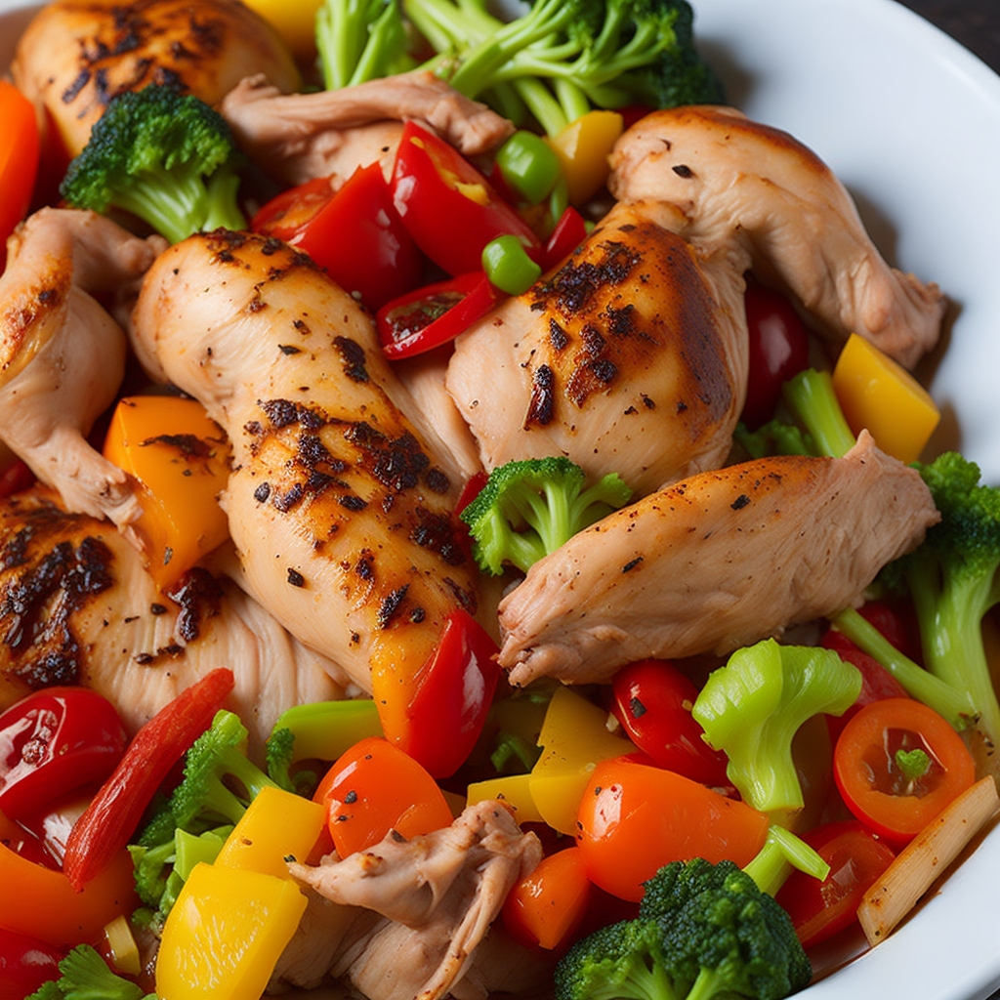

Mediterranes Hähnchen-Gemüse
10 Min
simpel
12.05.2023
Zutaten für
| 130 g Hähnchen-Innenfilet |
| 80 g Cocktailtomaten |
| 67 g Feta |
| 100 g Zucchini |
| 1 EL Olivenöl |
| 10 g Salz |
| 15 g Oregano, gerebelt |
| 8 g Thymian, gerebelt |
| 8 g gehackter Basilikum |
| 8 g Pfeffer |
Zubereitung
ca. 10 Minuten
Gesamtzeit ca. 20 Minuten
1. Schritt
Backofen auf 200°C (Ober- und Unterhitze) vorheizen.
2. Schritt
Hähnchen-Innenfilet, Cocktailtomaten, Feta, Zucchini
Die Zucchini vierteln und in Scheiben schneiden, die Cocktailtomaten halbieren und das Hähnchenfilet sowie den Feta in mundgerechte Würfel schneiden. Alles in eine große Schüssel geben
3. Schritt
Olivenöl, Salz, Oregano, gerebelt, Thymian, gerebelt, gehackter
Basilikum, Pfeffer
Alles mit Olivenöl und den Gewürzen gut vermischen und anschließend auf einem mit Backpapier
ausgelegten Backblech
verteilen.
4. Schritt
Das Backblech in den Ofen schieben, etwa 20 Minuten im vorgeheizten Backofen garen und fertig.Guten Appetit!